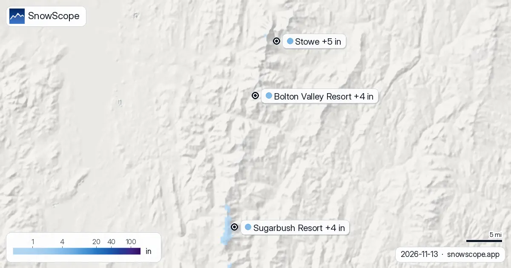

Snow forecast in the US Northeast: up to 5 in at Stowe by 16 November
Between now and 16 November we expect 5 in (12 cm) at Stowe, 4 in (11 cm) at Bolton Valley Resort and 4 in (10 cm) at Sugarbush Resort. Remember that a resort value is a model estimate for an area; a station tells you about one spot. Field work in dry mountains teaches one thing: the map is a start, the slope itself has the last word.
See the live snow forecast for Stowe in the SnowScope appSnow depth, powder alerts and the 3D map, free.
Snow on the slopes today
Today 28 of the 112 resorts in the US Northeast have snow on their upper slopes; in all, our model counts 5,568 sq mi (14,420 km²) under snow.
| Resort | Snow depth | New snow, 72 h | Coming, next days | Top |
|---|---|---|---|---|
| Stowe | 0 in (1 cm) | 2 in (4 cm) | 5 in (12 cm) | 3,648 ft (1,112 m) |
| Bolton Valley Resort | 0 in (0 cm) | 1 in (3 cm) | 4 in (11 cm) | 3,117 ft (950 m) |
| Sugarbush Resort | 1 in (3 cm) | 2 in (6 cm) | 4 in (10 cm) | 4,062 ft (1,238 m) |

Top, middle, bottom
Expect two seasons in one resort at Stowe on 14 November: a freezing level of 689 ft (210 m) to 1,870 ft (570 m) means wet snow below and wintry snow above.
On 14 November the freezing level at Bolton Valley Resort sits at 722 ft (220 m) to 1,706 ft (520 m): wet snow is likely low down, while the top keeps winter snow.
Expect two seasons in one resort at Sugarbush Resort on 15 November: a freezing level of 1,181 ft (360 m) to 1,772 ft (540 m) means wet snow below and wintry snow above.
What to expect next
More ground is white now: 93 sq mi (240 km²) on 11 November, 5,568 sq mi (14,420 km²) today, and 2,753 sq mi (7,130 km²) expected on 16 November.
Safety and avalanche level
Forecasts a few days ahead can change: look at the map again the day before you travel.
Tips for skiers
- Forecasts a few days ahead can change: look at the map again the day before you travel.
- If the freezing level climbs above the lifts, the snow will be wet and heavy: head for the highest chairs.
- Fresh snow changes fast once the sun is on it: it settles, gets wet and loses its lightness. Morning is the time to ski it.
- Before you ski off-piste or go touring, read the official avalanche bulletin (links below).
- Get a powder alert in the SnowScope app to know when Stowe gets fresh snow.
About these numbers
Resort snow depths are the deepest snow on the resort's upper slopes from the SnowScope snow model (about 1 km, run of 13 November); they are estimates for an area, not a measurement at one point. Station values are measurements on the date shown. Forecasts can change. Always read the official avalanche bulletin before going off-piste.
Official avalanche bulletins: Mount Washington Avalanche Center
Cite this report
For research, teaching or the press: the numbers and charts are free to reuse under CC BY 4.0 with this citation.
SnowScope (2026), Snow forecast in the US Northeast: up to 5 in at Stowe by 16 November, https://snowscope.app/blog/en/2026/11/us-northeast-stowe-snow-forecast-13-november-2026.html, accessed 2026-11-13
SnowScope (Atlas Labs). (2026, November 13). Snow forecast in the US Northeast: up to 5 in at Stowe by 16 November. SnowScope snow reports. https://snowscope.app/blog/en/2026/11/us-northeast-stowe-snow-forecast-13-november-2026.html
BibTeX
@misc{snowscope2026usnortheaststowesnowfore,
author = {{SnowScope (Atlas Labs)}},
title = {Snow forecast in the US Northeast: up to 5 in at Stowe by 16 November},
year = {2026},
month = nov,
howpublished = {\url{https://snowscope.app/blog/en/2026/11/us-northeast-stowe-snow-forecast-13-november-2026.html}},
note = {Published 2026-11-13 20:06 UTC; accessed 2026-11-13}
}· CC BY 4.0 · Methods, data and tools →
Stowe: snow and temperature by height, this winter vs last (tools) →
Follow Stowe
Free: a message when fresh snow is coming, and the forecast every morning.
More snow reports

Magic Mountain in Londonderry, Vermont: an independent hill with steep glades, an old red chairlift and thin natural snow. Five things to know, with the snow of 46 past winters.

Our forecast has the 0 °C level in the US Northeast between 0 ft (0 m) and 4,593 ft (1,400 m) in the coming days. On Thursday 12 November, in the …

Is this a good start to the winter in the US Northeast? Today's snow at 4 resorts in the US Northeast, set against the same date in each of the past …